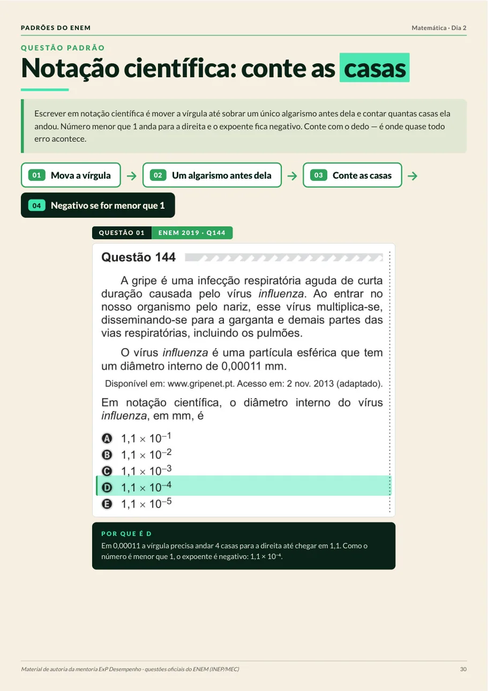

Um padrão por página
Nada de teoria solta. Cada página mostra o padrão, a cadeia de raciocínio e as questões oficiais do ENEM onde ele aparece, com a alternativa certa já destacada.

- 1
O nome do padrão
Uma frase que você consegue repetir na hora da prova, do tipo “conte as casas”.
- 2
O que a banca está cobrando
A ideia em um parágrafo e o ponto exato onde quase todo mundo erra.
- 3
A cadeia de passos
A sequência para sair do enunciado até a alternativa, sem chute.
- 4
Questões oficiais, recortadas da prova
Com a alternativa correta grifada e o “por que é ela”, e não as outras.
O que mais caiu no Dia 2
Os 10 assuntos com mais questões nas duas áreas do domingo, contados questão por questão nas provas de 2016 a 2025. É frequência histórica, não previsão do que vai cair.
| # | Assunto | Nº | % da área | Provas |
|---|---|---|---|---|
| 1 | Razão, proporção e escala Matemática | 54 | 12,0% | 10/10 |
| 2 | Porcentagem e conversão de unidades Matemática tem padrão no PDF | 53 | 11,8% | 10/10 |
| 3 | Estatística: média, mediana, moda e desvio Matemática tem padrão no PDF | 51 | 11,3% | 10/10 |
| 4 | Gráficos e funções (função afim) Matemática | 35 | 7,8% | 10/10 |
| 5 | Geometria de posição: projeções, poliedros e círculo Matemática | 27 | 6,0% | 10/10 |
| 6 | Probabilidade Matemática | 25 | 5,6% | 10/10 |
| 7 | Circuitos elétricos (eletrodinâmica) Física tem padrão no PDF | 25 | 5,6% | 10/10 |
| 8 | Ondulatória e acústica Física | 24 | 5,3% | 8/10 |
| 9 | Ecologia: relações, cadeias e ciclos Biologia tem padrão no PDF | 24 | 5,3% | 10/10 |
| 10 | Prismas, cilindros e pirâmides (volume) Matemática | 22 | 4,9% | 10/10 |
Fonte: Mapa do ENEM · Dia 2 (ExP), contagem no banco da ExP: 900 questões oficiais do INEP (450 de cada área), 10 provas regulares de 2016 a 2025. Circuitos, Ondulatória e Ecologia aparecem somadas com o bloco “Avançada” de mesmo nome da taxonomia ExP. O material Padrões usa questões das provas de 2016 a 2023.
Os 30 padrões do Dia 2
Ciências da Natureza e Matemática, em 47 questões das provas aplicadas de 2016 a 2023.
Ciências da Natureza
24 padrões · 36 questões- Separação de misturas pelas propriedades
- Leitura de tabela e de esquema
- Calor específico e mudança de estado
- Oxidação, redução e ligação química
- Circuitos, indução e blindagem elétrica
- Força, lançamento e óptica
- Ciclos da natureza e bioacumulação
- Genética, osmose e fisiologia
Matemática
6 padrões · 11 questões- Porcentagem: sobre qual base
- Média como soma total
- Gráfico que dá o número para a conta
- Unidades e conversão
- Trecho do gráfico, não valor exato
- Notação científica
Páginas do jeito que você vai receber
Questões oficiais do ENEM (INEP/MEC), recortadas direto do caderno de prova. Toque numa página para ampliar.
Garanta o seu Dia 2
O PDF chega por e-mail assim que o pagamento é aprovado. Dá para ler no celular, no computador ou imprimir.
Padrões do ENEM · Dia 2
Pagamento único · Natureza e Matemática · PDF
- 30 padrões, um por página
- 47 questões oficiais do INEP (2016–2023), com a certa grifada
- O porquê de cada resposta, passo a passo
- PDF de 30 páginas: celular, computador ou impresso
Pix, cartão ou boleto · Compra processada pela Kiwify
Dúvidas
Como eu recebo o material?
Assim que o pagamento é aprovado, você recebe um e-mail da Kiwify com o acesso. O PDF fica disponível para baixar quantas vezes quiser.
As questões são oficiais mesmo?
Sim. Todas vêm das provas aplicadas do ENEM entre 2016 e 2023, publicadas pelo INEP/MEC, e aparecem recortadas direto do caderno de prova.
O que o material cobre?
O segundo dia do ENEM: Ciências da Natureza (Química, Física e Biologia) e Matemática. São 30 padrões e 47 questões oficiais: 24 padrões e 36 questões de Natureza, 6 padrões e 11 questões de Matemática.
Dá tempo de usar antes da prova?
São 30 páginas, uma por padrão, pensadas para leitura rápida: o padrão, a cadeia de passos e as questões resolvidas na mesma página.
Serve para quem está começando agora?
Serve. O material não assume conteúdo avançado: ele ensina a ler o enunciado e a reconhecer o que a banca está pedindo.
Dá para imprimir?
Dá. O PDF é em A4 e foi desenhado para ficar legível impresso, inclusive em preto e branco.
E se eu não gostar?
Você tem 7 dias para pedir reembolso, direto pela Kiwify, sem precisar justificar.